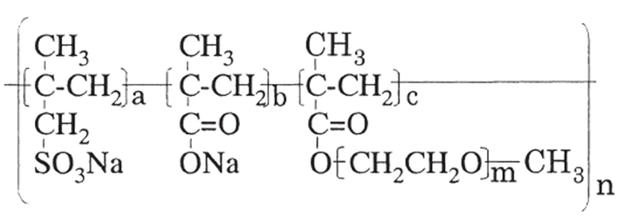
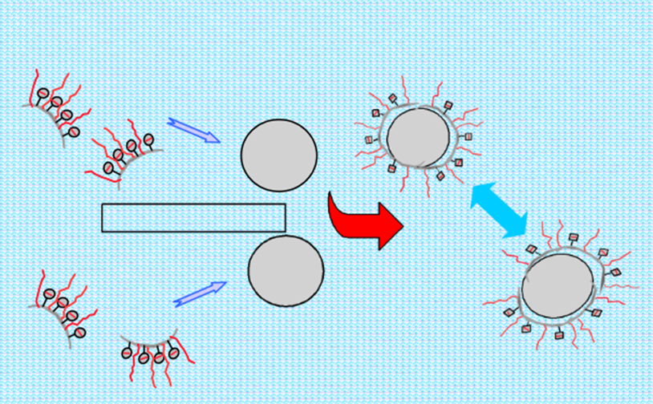

پلی کربوکسیلات اتر؛ پارامتر های مهم در ساختار ابر روان کننده های بتن
پلی کربوکسیلات اتر؛ پارامتر های مهم در ساختار ابر روان کننده های بتن
ساختار پلی کربوکسیلات اتر:
شکل کلی ساختاری فوق روان کننده های بر پایه ی پلی کربوکسیلات اتر مطابق زیر است:

نحوه عملکرد پلی کربوکسیلات اتر در بتن:
روش عملکرد ابر روان کننده های بتن بر پایه پلی کربوکسیلات اتر از نوع دفع الکترو استاتیکی و فضایی است. اما تاثیر دفع فضایی بیشتر است. زنجیر اصلی دارای گروه های COO- می باشد که این سبب می شود که زنجیر اصلی داری بار منفی شود. البته گروه های CH2SO3 در صورت وجود به این بار منفی کمک می کنند (این بار منفی از بار پلیمرهای تراکمی کمتر است). پس با استفاده از این بار منفی پلیمر بر روی ذرات سیمان جذب می شود.
زنجیرهای جانبی از نوع پلی اکسی اتیلن می باشند. این زنجیرها سبب ایجاد یک دافعه فضایی بین ذرات سیمان و در نتیجه پخش آنها می شوند. بنابراین وابستگی آنها به محیط قلیایی کمتر شده است. این پلیمرها به پلیمرهای شانه ای شکل معروف هستند.

دفع فضایی ذرات سیمان
عوامل تاثیر گذار بر عملکرد پلی کربوکسیلات اتر در بتن:
عوامل تاثیر گذار بر عملکرد فوق روان کننده های کربوکسیلاتی بتن عبارتند از:
- میزان بار زنجیر اصلی
- طول زنجیر اصلی
- تعداد زنجیرهای جانبی
- طول زنجیرهای جانبی
- نوع زنجیرهای جانبی
- گروه های سولفوناتی
- ناخالصی های موجود (اولیگومر، مونمر واکنش نکرده، محصول جانبی و...)
تاریخچه مطالعات انجام شده روی پلی کربوکسیلات اتر:
پروفسور کازو و همکاران بر روی فوق روان کننده بتن بر پایه کربوکسیلات مطالعه کردند. آنها یافتند که با افزایش طول زنجیر جانبی پلیمریزاسیون مونمر دارای پلی اتیلن اکسید سختتر می شود. بنابراین طول زنجیر جانبی نباید بیشتر از 40 واحد منومری باشد، تا پلیمریزاسیون با مشکل روبه رو نشود. علاوه بر این Mw و میزان پلیمر نیز باید تنظیم شود. آنها یافتند که وزن مولکولی در حدود 2000 بسیار مناسب است.
طول زنجیرهای جانبی یک پارامتر بسیار مهم محسوب می شود. هرچه طول زنجیر جانبی بیشتر باشد، ویسکوزیته مخلوط بتن کمتر میشود (سیالیت بیشتر میشود) و تنش برشی کمتر می شود. همچنین طول پلی اتیلن اکسید بر درصد آب به سیمان نیز تاثیر زیادی میگذارد. هرچه زنجیر جانبی بلندتر شود نسبت آب به سیمان کمتر می شود. اما در مقادیر کم نسبت آب به سیمان تاثیر طول PEO بسیار بیشتر است.
طول زنجیر اصلی نیز تاثیر گذار است. هر چه این طول بیشتر باشد، سیالیت بتن تازه کمتر میشود که این مطلوب نیست.
تعداد گروه های سولفونیک نیز بر روی جذب پلیمر بر ذرات سیمان تاثیر گذار است. در نتیجه با افزایش تعداد گروه های سولفونیک موجود در زنجیر اصلی جذب افزایش یافته و پخش بیشتر می شود.
مشاهده شده است که با افزایش طول زنجیر جانبی و کاهش طول زنجیر اصلی، جذب پلیمر بر روی سیمان کاهش مییابد، که این با نتایج گرفته شده از ارتباط این دو با سیالیت متناقض است.
میتوان این نتیجه را گرفت که صرفا جذب بر روی دانه های سیمان پخش بهتر آنها را سبب نمی شود. پس نوع پلیمر و طول زنجیر جانبی بر سیالیت و کاهش اسلامپ مخلوط بتن تازه تاثیرش از طول زنجیر اصلی بیشتر است.
افزایش گروه های کربوکسیلیک و سولفونیک، زمان تثبیت بتن را افزایش می دهند. زیرا جذب پلیمر بر روی دانههای سیمان بیشتر شده و به دنبال آن هیدراسیون به تاخیر می افتد. این به معنی کاهش افت اسلامپ نیز می باشد.
طول زنجیرهای پلی اتیلن اکسید نیز بر روی زمان تثبیت تاثیر گذاشته و افزایش آنها، زمان تثبیت را کمتر می کند. در فوق روان کننده های جدید بزرگترین مشکل، افت اسلامپ سریع می باشد.
دکتر فرانک و همکاران بر روی تاثیر پارامترهای مختلف ساختاری فوق روان کننده بر روی افت اسلامپ مطالعه کردند. آنها بزرگترین مشکل استفاده از فوق روان کننده ها را کاهش سریع افت اسلامپ و تا خیر در تثبیت یا تثبیت ناگهانی دانستند. به نظر آنها این مشکلات به دلیل ناسازگاری فوق روان کننده و سطح سیمان بود.
با کاهش تعداد زنجیرهای جانبی و همچنین کاهش طول آنها بار منفی زنجیر اصلی افزایش می یابد و جذب بر روی دانه های سیمان بیشتر می شود. نتایج آزمایشات نیز نشان داده است که با کاهش چگالی زنجیر های جانبی کارایی بهبود ، ویسکزیته مخلوط بتن کاهش و استحکام بهبود یافته است.
محصولات مرتبط استرامیکس (شرکت بسپار بتن ایرانیان هوشمند):
Strusin R530: ابر روان کننده بتن و کاهنده شدید آب دیرگیر بر پایه پلی کربوکسیلات اتر اصلاح شده با عملکرد حفظ اسلامپ طولانی
Strusin N510: ابر روان کننده بتن و کاهنده شدید آب نرمال بتن بر پایه پلی کربوکسیلات اتر اصلاح شده
بهترین مطالب هر ما
ارسال میشه به صندوق پستی شما!
این بالا کلیک کن و ایمیلت رو بنویس
ثبت